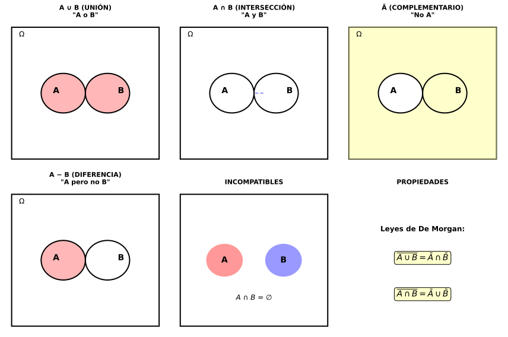

| Operación | Notación | Significado |
|---|---|---|
| UNIÓN | A ∪ B | "A o B" (al menos uno ocurre) |
| INTERSECCIÓN | A ∩ B | "A y B" (ambos ocurren) |
| COMPLEMENTARIO | Ā o Ac | "No A" |
| DIFERENCIA | A − B | "A pero no B" |

| Propiedad | Fórmula |
|---|---|
| Complementario | \(P(\overline{A}) = 1 - P(A)\) |
| Unión (general) | \(P(A \cup B) = P(A) + P(B) - P(A \cap B)\) |
| Unión (incompatibles) | Si \(A \cap B = \emptyset\): \(P(A \cup B) = P(A) + P(B)\) |
| De Morgan 1 | \(\overline{A \cup B} = \overline{A} \cap \overline{B}\) |
| De Morgan 2 | \(\overline{A \cap B} = \overline{A} \cup \overline{B}\) |
Ej 1: Dado equilibrado. Sean A="par", B="múltiplo de 3". Calcular:
Identificación de sucesos:
a) P(A ∪ B) = "Par o múltiplo de 3":
Verificación con fórmula:
b) P(A ∩ B) = "Par Y múltiplo de 3":
c) ¿Incompatibles?
SÍ pueden ocurrir simultáneamente (el 6 cumple ambas condiciones).
Ej 2: Baraja española (40 cartas). Extraer una carta al azar. Sean:
Calcular P(A ∪ B).
Análisis:
Fórmula de la unión:
Interpretación: 47.5% de probabilidad de sacar oros o figura (o ambas).
Verificación contando directamente:
Ej 3: Si P(A) = 0.6 y P(B) = 0.3, ¿cuál es el rango de valores posibles para P(A ∩ B)?
Restricción 1: Cota inferior
Restricción 2: Cota superior
Sabemos que: \(P(A \cup B) = P(A) + P(B) - P(A \cap B)\)
Como \(P(A \cup B) \leq 1\):
Pero como P ≥ 0 siempre, la cota real es:
Conclusión:
Casos extremos:
Ej 4 (Contexto Vigo): En un grupo de estudiantes del IES Teis:
Calcular probabilidad de que un estudiante elegido al azar: a) Hable gallego o haga deporte, b) No hable gallego ni haga deporte.
Datos:
a) P(G ∪ D) = "Gallego o deporte":
75% de estudiantes habla gallego o hace deporte (o ambos).
b) P("Ni gallego ni deporte") = \(P(\overline{G \cup D})\):
Por De Morgan: \(\overline{G \cup D} = \overline{G} \cap \overline{D}\)
25% de estudiantes ni habla gallego ni hace deporte federado.